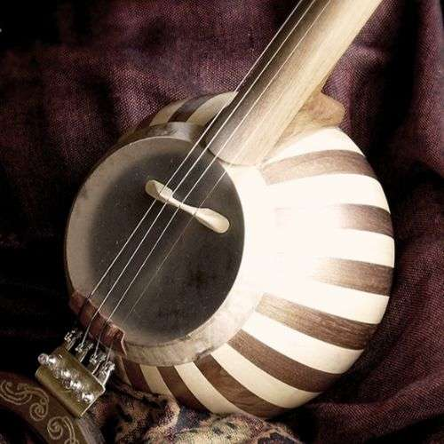

کمانچه
کَمانچه یکی از سازهای موسیقی ایرانی است. این ساز علاوه بر شکم، دسته و سر، در انتهای پایینی ساز، پایهای دارد که روی زمین یا روی پای نوازنده قرار میگیرد. نوعی از کمانچه معروف به کمانچه لری وجود دارد که پشت باز است و مردمان لر به آن «تال» میگویند.
تاریخچه کمانچه
نخستین نشانههای تاریخی دربارهٔ کمانچه در کتاب موسیقی الکبیر اثر ابونصر فارابی در سده چهارم هجری دیده شدهاست. او در این کتاب از کمانچه با نام عربی آن، رباب یاد میکند. کمانچه در دوران صفویه و قاجاریه جزو سازهای اصلی موسیقی ایران بودهاست. نخستین صدای ضبطشده کمانچه به اوایل قرن بیستم میلادی بر میگردد.
ساز کمانچه به همت سازمان میراث فرهنگی در آذر ماه ۱۳۹۶ به ثبت جهانی در سازمان یونسکو رسید.

شکل ظاهری
کاسه ساز کروی و توخالی و معمولاً از جنس چوب توت است که به صورت ترکهای (تکههای باریک چوب که در کنار هم چسبانده میشود) ساخته میشود و مقطع نسبتاً کوچکی از آن در جلو به دهانهای اختصاص یافته و روی دهانه پوست کشیده شده و بر روی پوست، خرکی تقریباً شبیه به خرک تار و نه کاملاً عمود بر سیمها قرار گرفتهاست.
دستهٔ ساز، لولهای تو پر است و بهطور نامحسوس به شکل مخروط وارونه خراطی شدهاست. انتهای بالایی این لوله؛ توخالی و در طرف جلو شکاف دارد که نقش جعبهٔ گوشیها را مییابد. دسته فاقد پرده میباشد. سر ساز متشکل است از جعبهٔ گوشیها که در دو طرف آن هر یک دو گوشی کار گذاشته شده و یک قبه که در بالای جعبه قرار گرفتهاست. طول ساز تا سر قبه حدود ۸۰ سانتیمتر است.
در گذشته این ساز بدون سیم گیر که به شکل کنونی وجود دارد بودهاست. در گذشته سیمها مستقیماً به ساز وصل میشدند همانند سه تار یا به وسیله قطعه فلزی سیمها به آن ربط داده میشد. پس از ورود ویولن به ایران، تاندور ویولن (پیچهای کوچک تنظیم کوک) به سیم گیر اضافه شد تا نوازنده بتواند ساز را دقیق تر کوک کند.
تا پیش از ورود ویولن به ایران، جنس سیمهای کمانچه ابریشمی یا از روده تابیده شده حیوانات بود و توانایی گرفتن کوک بالا را نداشت. پس از ورود ویلن به ایران، سیمهای ویلن جایگزین سیمهای کمانچه شد.
این ساز جزو دسته سازهای زهی کششی است. کمانچهٔ امروزی دارای ۴ سیم میباشد. کمانچه در زمان قدیم تنها سه سیم داشته و پس از ورود ویولن به ایران به تقلید از آن سیم چهارم به آن افزوده شدهاست. این سیمها به موازات درازای ساز گستردگی دارد و آوای آن خیلی خوش و دلکش اما کمی اصطلاحاً تودماغی میباشد. این ساز میتواند آواهای گوناگون بسیاری را برآرد.